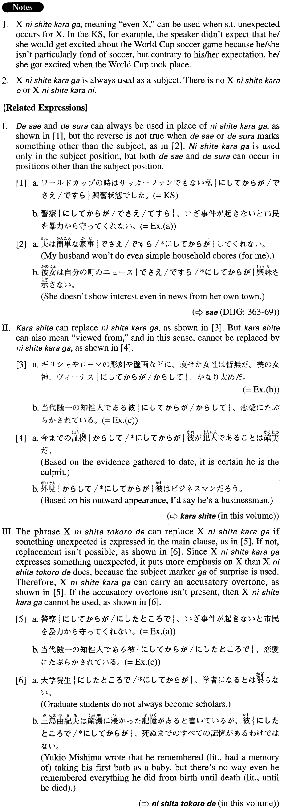

にしてからが (A. 432)
- (ks).
- ワールドカップの時はサッカーファンでもない私にしてからが興奮状態でした。
- I am not a soccer fan, but during the World Cup, even I got excited.
- (a).
- 警察にしてからが、いざ事件が起きないと市民を暴力から守ってくれない。
- Even the police don't protect citizens from violence unless an incident actually occurs.
- (b).
- ギリシャやローマの彫刻や壁画などに、痩せた女性は皆無だ。美の女神、ヴィーナスにしてからが、かなり太めだ。
- In Greek or Roman sculptures and mural paintings there are no emaciated-looking women. Even Venus, the Goddess of Beauty, is quite full-figured.
- (c).
- 当代随一の知性人である彼にしてからが、恋愛にたぶらかされている。
- Even he, the greatest intellectual of the day, was deceived by love.
- (d).
- 息子は父から受け継いだ作風で作品を描いていたが、すでにその父にしてからが、古くさいと言われていた。
- He produced paintings in the mode he inherited from his father, but that style was already considered outdated in his father's time.
- (e).
- 首相の構造改革案にしてからが、官僚の強い抵抗にあっている。
- Even the prime minister's plan for structural reform met with strong resistance from bureaucrats.
